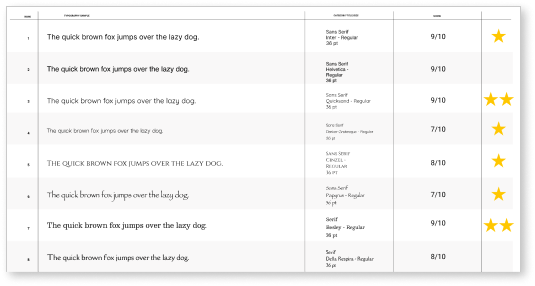
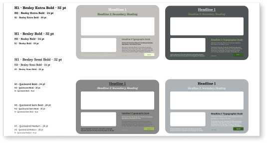

Nonprofit Website Redesign
Choose a nonprofit organization and execute the user experience (UX) and user interface (UI) design method. Follow the double diamond design thinking model and design process to empathize, define, ideate, prototype, and test a new interface to create a high-fidelity responsive web design (RWD) solution through a clickable UI prototype.
The BSA’s goal is to inspire and promote the advancement of knowledge in botany. However, this website falls short in usability and appeal. Clutter & disorganization leave users frustrated while the appearance of the current website leaves users feeling uninspired and disinterested.
Redesign the current Botanical Society of America website with a better layout and more appealing design in order to make it easier for users to navigate and find what they are looking for while also continuing to encourage, excite, and motivate people in the world of botanical science.


Research
Empathize
Define
Ideate
Prototype
Test
Conclusion


In order to gain information on Botany.org users, I started my reserach by asking 4 participants between the ages of 25-34 who study botany and frequently use the Botanical Society of America website to complete a survey on Google forms.
This research was done in hopes of getting a better understanding of the demographic, the pain & gains users experience, how it can be improved, & in order to back up the information I already obtained from my own research by looking up facts & statistics.
I discovered that most users visit Botany.org to view awards & recipients, access botany journals, and learn more about botany conferences. I also found the biggest pain points of using the website included disorganization, clutter, and design.
From this research, I knew I could help users by creating a better layout and navigation system as well as provide them a more visually engaging and appealing design for the website.
“(Botany.org is) extremely cluttered & not organized in any good way."
- Participant 1
“There is just too much old and outdated information accupying too much space.”
- Participant 2
“There are so many items on the menu, it’s really crazy looking right now.”
- Participant 3
“For people unfamiliar with the website it’s hard to know where to look”
- Participant 4
You can’t improve a website without first understanding what needs improvement. That’s why before I started the design process, I conducted a thorough analysis of the current Botanical Society of America website.
Upon analyzing the current Botanical Society of America website, I made annotations on elements I noticed such as the use of negative space, the layout of the website, the navigation, the text size, featured content, and the information & design of the home page.


Using my survey data, I determined what the main reason is that users are visting Botany.org. I used that information to make user paths & focus on the main actions users would be completing like signing up for a membership, & looking at awards, conferences, news, publications, & jobs.
I analyzed their organization & then determined that the Botanical Society of America website’s main forms of navigation rely heavily on hierarchy, time, and category.

To analyze the interface itself to see where Botanical Society of America site is lacking, I completed an interfae analysis by focusing on accessibility. This showed that the current website contained many issues such as contrast errors, structural elements, server response time, and overall performance.
By doing a competitor analysis, I learned how my competition opperates & identify their strengths and weaknesses. This helped me to keep up with trends and guarantee that my product meets or exceeds industry standards and expectations. I chose to analyze 3 other nonprofit organizations including The Nature Conservancy, Center for Plant Conservation, & One Tree Planted.


Before I started my research, I created proto personas based off my assumptions of my users. I chose to create two proto-personas to include both users looking to donate and users in the beginning of their botanical career looking to advance.
Laboratory Assistant

Postdoctoral Researcher

After I finished analyzing my data, I used my results to create a user persona based off the information I gathered from our participants. Meet Cassie Hawthorne, a Graduate Research Fellow from Connecticut. Cassie is an aspiring botanist who wants to use the BSA site to stay up-to-date on the latest in botany but finds the information to be outdated, unorganized, & repetitive.
Graduate Research Fellow

The mission of the BSA is to inspire & promote the advancement of knowledge in the botanical sciences^. However, this website falls short in both usability & appeal. The clutter & disorganization leave users frustrated & searching for answers while the appearance of the website leaves the user feeling uninspired & disinterested. So I asked the question “How might we assist users with reducing frustration, finding the information they need, and keeping them engaged and inspired so that my users are successful based on the following measureable criteria: Amount of time it takes to search for information, number of times users return to the website, amount of users attending conferences and sharing publications, number of users applying to awards, getting new jobs, and leadership positions. By redesigning this website, we can make it easier for users to navigate and find what they’re looking for and also continue to encourage, excite, and motivate people in the world of botanical science.
+ https://www.britannica.com/science/botany/Taxonomic-aspects
* https://www.environmentalscience.org/botany
My website redesign was created to help ease the frustration and disinterest users experience while using the current Botanical Society of America website by designing a new website that is better organized, up-to-date, and more engaging in order to save users time by being able to find information they are searching for quicker, and leaving them feeling inspired & excited by the new website design.
My goal is to improve the structure of the current website & create a more attractive design to help with usability & keeping users engaged. I might do this by making the website better organized, less cluttered, & more interesting so users will continue visiting the website. Doing this will reduce frustration, reduce time spent searching for information, & keep them inspured & up to date with the redesign & the latest news in botanical science.

To decide on fonts, I gathered a variety of fonts to choose from. I marked the ones I liked & then performed user voting which helped me to choose Besley & Quicksand as my fonts.
With our fonts and colors chosen, I created hierarchy samples to determine what styles of fonts to use, where to use the colors, and to see what my layout might look like.
I began brainstorming themes for my redesign by creating a mood board. With such a large variety of plants in so many different colors, I wasn’t sure where to start. I pulled images of flowers of all colors to create a wide range of options. I then played around with brown and green which I had originally decided on but once I started the design process, I noticed the brown looked pink against the green so I changed my color themes to a monotone green theme, adding color in with images relating to botany.
To keep all my UI design elements together & easily accessible, I created a style guide labeling the colors and fonts of my theme. I also included hierarchy as well as the logo, icons, buttons, & png’s of images I planned on using to bring color into my design.

Before prototyping, I began with card sorting in order to simplify the website navigation and better organize the layout of Botany.org. Since this website contained an abundance of information and an overwhelming amount of options, I decided to organize the redesign with both top navigation located in the header with broader categories as well as a side navigation drop down menu containing the more specific subcategories.


Next I illustrated sketches of the home screen. I used the card sorting & sitemap I created to help organize information based off user needs & navigation. I used time, hierarchy, & category to decide how to display information on the new website.

After getting my layout determined, I used my sketches to create digital wireframes focusing on the home screen and the most common user paths such as the conference and the awards page. I stuck with similar shapes throughout the design to create an organic & natural feel to complement the theme of the Botanical Society of America.
I assets & components including interactions for all buttons, the menu, and the conference page drop-down boxes.

To get a feel of what the new website redesign would look like on a phone, I created mobile mockups of the home page.

With finished wireframes, assets and components laid out, and a good idea of what I wanted me redesign to look and feel like, I continued developing my interface by creating a high fidelity clickable prototype to prepare for user testing.


As a very indecisive person, A/B testing is a lifesaver. Using A/B testing helped me to make decisions on my design and choose the options that pleased the most amount of people. This allowed me to determine different layouts, fonts, and color choices.
I asked my participants to complete various tasks to analyze the functionality of my redesign. These tasks included:
User testing helped me to gain valuable insight that was used to iterate my design with the goal of increasing user-friendliness and improve user experience.
Based off user feedback, I refined the menu & ironed out any of its bugs and I also created better organization that made the interface cleaner & more readable.


With user testing wrapping up, I refined my prototype by paying close attention to every detail in order to clean up my interface and create the most satisfying user friendly experience that I can design.
After analyzing the current Botanical Society of America website & doing research on it’s users, it was easy to come to the conclusion that it was due for a much needed redesign.
Through this process I learned that not only is user friendliness important to consumers, but also the design of the interface itself. The biggest complaints of the current website were that it was cluttered, disorganized, contained outdated information, and the design was ugly, boring, and also suppressed creativity.
It's my hope that I was able to alleviate pains of using this website & create a more dynamic look by taking user needs into account to provide a new website that is more organized with better navigation & more engaging, saving users time by being able to find the information they're searching for quicker and leaving them feeling inspired by the new redesign.